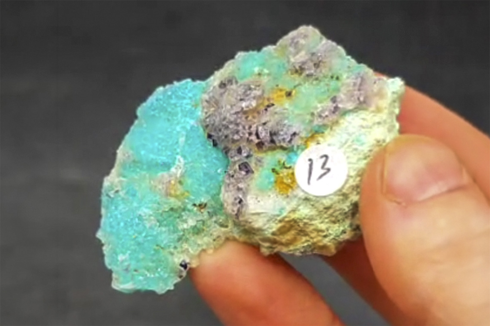

Chrysocolla with Fluorite
"Purple Fluorite on Chrysocolla"
VIII-10814
Ojuela Mine, Mapimí, Mapimí Municipality, Durango, Mexico
Purchased 8/2/2026 from Virgo Gems for $15.07
Inventory • Received
Details
Storage Type: Unassigned
Storage Location: 000 None
Size class: Cabinet (0)
Dimensions: 5.6 × 3.7 × 1.1 cm
Mass: 18.6000003814697 g
Luster: Average, Vitreous